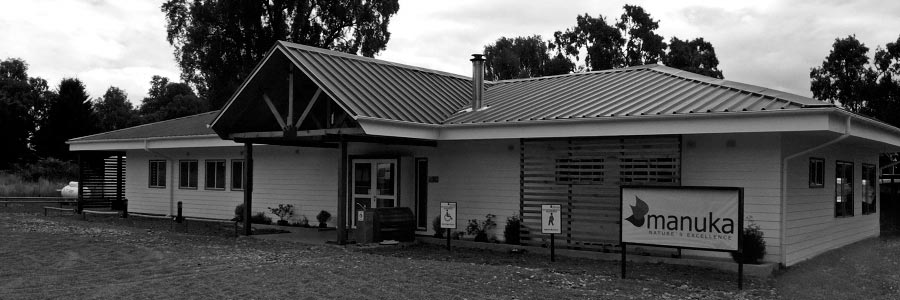

INSTITUCIONAL

Proyecto diseñado para empresa lechera Manuka S.A. Casino que alberga aproximadamente 100 trabajadores, cuenta con: cocinas, áreas de lavado, de almacenamiento de insumos y alimentos, salón comedor, entre otras...
Cuenta además con planta de tratamiento de aguas servidas y planta de purificación de agua potable, se encuentra en el sector rural de Rupanco a 30 kms de la ciudad de Osorno. La construcción se desarrolló entre los meses de enero a septiembre del 2013.
FICHA TÉCNICA
-
SUPERFICIE
360m2
-
UBICACIÓN
RUPANCO, OSORNO
-
AÑO
2013